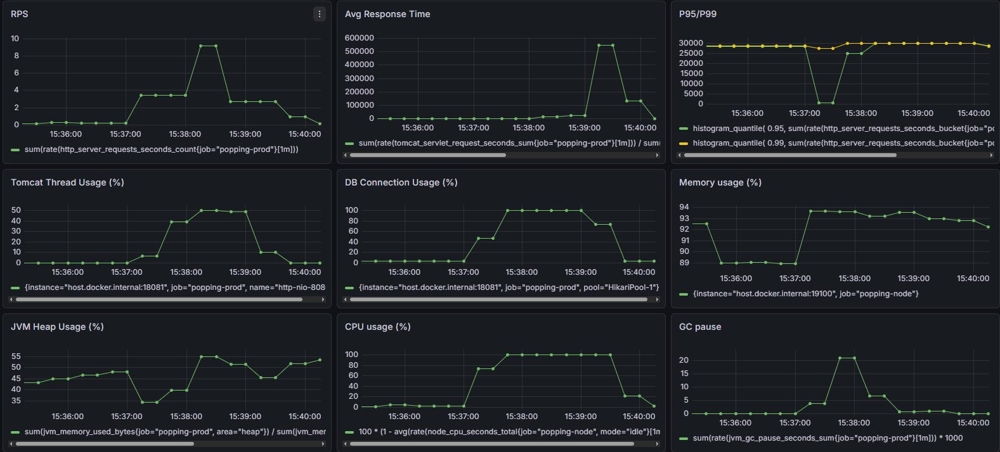
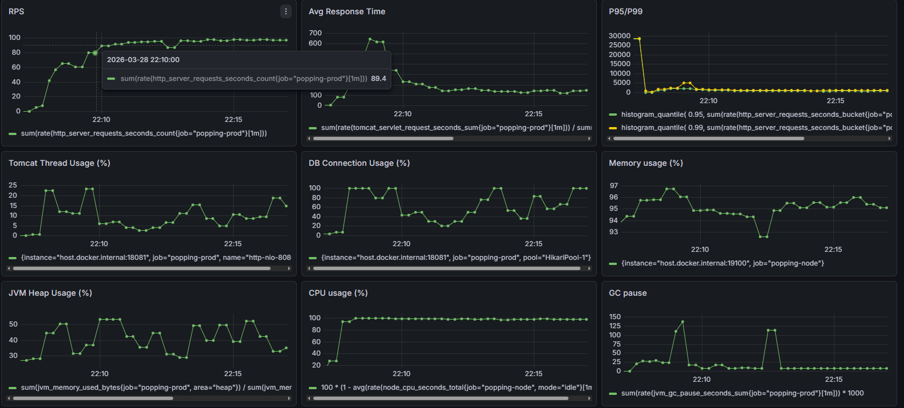

likes 450만 건 풀스캔 제거
집계와 개인화를 한 쿼리에서 처리하던 구조가 데이터 450만 건에서 풀스캔으로 폭발했습니다.
인덱스로 덮는 대신 쿼리 구조를 분리해 근본 원인을 제거했습니다.
47초짜리 쿼리가 커넥션 풀을 잡아먹고 있었습니다
서비스 성장 시 병목을 사전 검증하기 위해 likes 450만 건을 적재한 뒤 부하 테스트(JMeter 100 VUser)를 실행하자
에러율 15.53%, 평균 응답시간 10,460ms로 악화됐습니다.
HikariPool - Connection is not available (total=30, active=30) —
커넥션이 소진되며 요청이 줄을 서다 타임아웃으로 실패하는 패턴이었고,
Slow Query Log에서 Query_time 47.2s · Rows_examined 4,500,000인 병목 쿼리를 특정했습니다.
풀스캔을 유발한 단일 쿼리
SELECT l.target_id,
SUM(CASE WHEN l.type='LIKE' ...) -- 집계
SUM(CASE WHEN l.type='DISLIKE' ...) -- 집계
MAX(CASE WHEN l.user_id=:userId ...) -- 개인화
MAX(CASE WHEN l.user_id=:userId ...) -- 개인화
FROM likes l
WHERE l.target_type = 'COMMENT' -- ← WHERE 선두가
AND l.target_id IN (...) -- target_* 조건
GROUP BY l.target_id
인덱스가 사용되지 못한 이유
-- 당시 likes 테이블의 인덱스 (Hibernate 자동 생성 UK)
UK (user_id, target_type, target_id, type)
UK (guest_identifier, target_type, target_id, type)
↑ 선두 컬럼이 user_id / guest_identifier
집계 쿼리의 WHERE는 target_type, target_id로 시작하는데
두 UK의 선두는 user_id / guest_identifier —
Leftmost Prefix Rule에 의해 어느 인덱스도 탈 수 없어 450만 건 전체를 읽었습니다.
EXPLAIN ANALYZE로 실행계획을 확인해 검증했습니다.
인덱스로 덮지 않고 쿼리 구조를 분리했습니다
집계 전용 인덱스(idx_like_target)를 추가하자 에러는 즉시 해소(163ms, 0%)됐지만,
이는 구조적 문제를 인덱스로 덮은 것에 가까웠습니다. 데이터가 커질수록 인덱스 유지 비용도 함께 커집니다.
| 검토 방식 | 검토 결과 | 판단 |
|---|---|---|
| 집계 전용 인덱스 추가 | 에러 즉시 해소(163ms, 0%). 그러나 집계·개인화를 한 쿼리로 처리하는 구조적 문제를 덮은 것. 데이터 증가 시 인덱스 유지 비용 증가 | 한계 |
| 기존 UK 순서 변경 | 집계(WHERE target_*)와 개인화(WHERE user_id)의 선두 조건이 서로 달라, 하나의 UK로 둘을 모두 만족 불가 — 어느 방향이든 인덱스 추가 필요 | 기각 |
| 쿼리 구조 분리 + 비정규화 칼럼 ✓ | 집계는 각 테이블의 like_count 비정규화 칼럼에서 직접 읽고, 개인화만 user_id 선두의 기존 UK 활용 — 별도 집계 인덱스 없이 해결 | 채택 |
분리 후 구조
[1] 집계값 ← comment.like_count (비정규화 칼럼)
SELECT c.id, c.like_count, c.dislike_count
FROM comment c WHERE c.id IN (...) -- PK 활용
[2] 개인 반응 ← likes, user_id 선두 조건
SELECT l.target_id, MAX(...) AS likedByMe, ...
FROM likes l
WHERE l.user_id = :userId -- ← UK 선두 일치
AND l.target_type = 'COMMENT'
AND l.target_id IN (...)
GROUP BY l.target_id
comment 테이블에는 이미 like_count가 비정규화되어 있었습니다 — count를 위해 450만 건을 집계할 이유가 없었습니다. idx_like_target 인덱스는 제거했습니다.
정합성 보완 — 재집계 배치
비정규화 count는 likes 테이블과 어긋날 수 있습니다. 매일 새벽 4시에 재집계해 불일치를 자동 보정하고, 보정 건수를 warn 로그로 남겨 이상 징후를 추적합니다.
UPDATE post p
JOIN ( SELECT target_id, SUM(...) AS like_count, ...
FROM likes WHERE target_type='POST'
GROUP BY target_id ) l ON p.id = l.target_id
SET p.like_count = l.like_count, ...
WHERE p.like_count != l.like_count OR ...
배치도 전체 GROUP BY라 규모에 비례해 느려지는 한계가 있어, 다음 단계로 증분 집계(updated_at 기반) 또는 CDC(Debezium)를 검토 대상으로 남겼습니다.
별도 인덱스 없이 인덱스 추가와 동일한 성능
likes 인덱스 구성 기준 3가지를 동일 조건으로 비교했습니다. 쿼리 분리 후(③)에는 idx_like_target 없이 UK만으로 인덱스 추가(②)와 동등한 성능을 유지 — 풀스캔이 구조적으로 제거됐음을 확인했습니다.
| 지표 | ① 분리 전 / UK만 | ② 분리 전 / +집계 인덱스 | ③ 분리 후 / UK만 |
|---|---|---|---|
| 에러율 | 15.53% | 0% | 0% |
| 평균 응답시간 | 10,460ms | 163ms | 167ms |
| P90 | 30,000ms | 540ms | 593ms |
| Throughput | 8.88 req/s | 96.7 req/s | 96.5 req/s |
부하테스트 지표 변화

풀스캔으로 커넥션 풀이 고갈 — 에러율 15.53%, 평균 10,460ms.

풀스캔 제거 후 — 에러율 0%, 평균 응답시간 정상화.
트레이드오프
- count를 비정규화 칼럼에서 읽으므로 likes 테이블과의 정합성 유지 필요 — 재집계 배치로 보완
- 쿼리가 1개 → 2개로 증가 (DB 왕복 2회) — 대신 별도 집계 인덱스 유지 비용이 사라지고 두 쿼리 모두 기존 PK/UK 활용
"문제는 인덱스 부족이 아니라, 집계와 개인화를 한 쿼리로 처리하며 불필요하게 넓은 범위를 읽게 만든 구조였습니다."
병목은 App CPU로 이동했습니다
쿼리 병목이 해소되자 이번엔 App CPU가 포화됐습니다. HAProxy 기반 Scale Out으로 이어집니다.